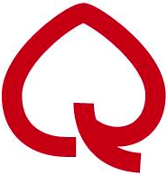
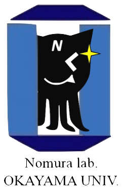

いざプログラミングの世界へ！
RailsGirls Okayamaを通してプログラミングを体験してみましょう！
プログラミングを始めるきっかけやコミュニティを、このイベントを通して提供したいと思っています😊
RailsGirls Okayama 3rdの応募フォームはこちらになります！
公式Twitterで情報発信をしていますので、よろしければフォローお願いします。
前回の写真はこちらからご覧になれます！
Hello world!
You can apply for Rails Girls Okayama 3rd here!
Come join us!
You can get info about RailsGirls Okayama via Twitter.
Please follow me!
You can also see the past event pics here.
Thanks!!😍
概要 コーチに教えてもらいながらアプリを作成します。継続して学習していくためのコミュニティを形成します。
必要なもの 自分のノートパソコン、やる気と楽しむ気持ちを持ってきてください！
コーチ募集 RailsGirls Okayamaではお手伝いいただけるコーチの方・スタッフの方を募集しています。お気軽にこちらrailsgirls.okayama@gmail.comまでご連絡ください。
| 18:00 - 20:00 |
ビフォアパーティーまずは参加者同士、お互いに知り合いになるところから！自己紹介と簡単なレクリエーション、18日のワークショップのための簡単なレクチャーを予定しています。Rubyプログラミングの最初の一歩を、コーチと共に始めてみましょう! |
|---|
| 10:00 - 10:10 |
開会一日の流れの説明。オーガナイザーから一言。 |
|---|---|
| 10:10 - 10:40 |
RubyとRailsの説明 |
| 10:40 - 12:00 |
ワークショップ ー ウェブアプリ構築はじめてのウェブアプリにトライしてみよう！ |
| 12:00 - 13:00 | ランチ |
| 13:00 - 18:00 |
ワークショップ自分流のウェブアプリに変えてみよう！ |
| 18:00 - 18:30 |
休憩 |
| 18:30 - 20:00 |
アフター・パーティ参加者、コーチ、スタッフによるパーティです。ワークショップで聞き損ねたことや RubyやRailsのこと、ステップアップの方法など、コーチに気軽に質問してみましょう。 |
参加費はどのくらいかかりますか？
お昼ご飯も含め無料です。プログラミングを楽しもうとする気持ちがあれば大丈夫です！
どのような人が参加するのでしょうか？
第一回のイベントの写真 / 第二回のイベント写真をご覧いただくと雰囲気がよくわかると思います。様々な年代の方々が参加されますので同年代の仲間を見つけることが出来るかもしれません。
男性も参加できますか？
参加できます。ただし、必ずウェブアプリを作りたがっている女性と一緒に参加してください。申し込み人数が多い場合はお断りすることがあります。
プログラミングの経験があります。手伝うことはできますか？
ありがとうございます。こちらのフォームからお申込みください。
日曜日のみの参加は可能でしょうか？
はい、可能です。その場合は、日曜日の9時からインストールを行っていただきます。
他言語でのプログラミングの経験があり、初心者ではないのですが参加可能でしょうか？
参加できますが、経験者には少し物足りない可能性があります。
一度もプログラミングの経験がないのですが大丈夫でしょうか？
はい、大丈夫です。そんなあなたのためにRails Girlsがあります。困ったことがあっても親切で優しいコーチが助けてくれるので、安心してご参加ください。
何か質問があればこちらにご連絡ください。
railsgirls.okayama@gmail.com
会場:
岡山大インキュベータ
〒700-8530 岡山県岡山市北区津島中1-1-1
交通機関：岡山駅岡電バス「福居入口」又は「岡大西門」下車、徒歩2～3分
お車：岡山ICで降り、岡山市内方面へ国道53号線を直進
Rails Girls Okayama 3rd は以下のすばらしいパートナーとの共同開催です。
ご支援いただけるパートナーを募集しております。下記のアドレスにご連絡ください。資料をお送りいたします。
railsgirls.okayama@gmail.com
 ギークガールズ岡山はRailsGirlsOkayamaから生まれたコミュニティです。月1で集まりながらアプリケーションを作成し学んでいます。
ギークガールズ岡山はRailsGirlsOkayamaから生まれたコミュニティです。月1で集まりながらアプリケーションを作成し学んでいます。
 Okayama.rbは、岡山でRubyやRuby on Railsを勉強する地域コミュニティです。ゆるく勉強会を開いているので初心者の人やRubyをこれから始めようと思っている方も気軽に参加ください。
岡山大学テクノロジーラボは、Web, スマホアプリ、IoTなどの分野に興味があり、またそれらに携わりたい学生や実際に作りたい学生などを募集しています！
 GitHub はソフトウェアの共同開発をするための最高の環境を開発・提供しています。1000 万人以上のユーザーが友だち、同僚、クラスメートと、時にはまったく知らない人とでさえ、コードなどを共有して素晴らしいプロジェクトを行っています。
GitHub はソフトウェアの共同開発をするための最高の環境を開発・提供しています。1000 万人以上のユーザーが友だち、同僚、クラスメートと、時にはまったく知らない人とでさえ、コードなどを共有して素晴らしいプロジェクトを行っています。
クレオフーガは、音楽クリエイターが活躍する場を創造することを理念とし、音楽共有サービス「クレオフーガ」、音源販売サービス「オーディオストック」を運営しています。
 株式会社spice lifeはECを通して世の中に笑顔を増やすサービスを作ります。spice lifeで開発するのはECの分野、ちょっと変わった、ちょっと新しい、ちょっと世の中を良くするようなECです。もちろんRailsで開発しています。オリジナルTシャツ作成サービスTMIXは各地のRailsGirlsのスタッフTシャツ作成もしています。
株式会社spice lifeはECを通して世の中に笑顔を増やすサービスを作ります。spice lifeで開発するのはECの分野、ちょっと変わった、ちょっと新しい、ちょっと世の中を良くするようなECです。もちろんRailsで開発しています。オリジナルTシャツ作成サービスTMIXは各地のRailsGirlsのスタッフTシャツ作成もしています。
 岡山大学工学部情報系学科乃村研究室では、研究の一環として、Railsを使ったWebアプリケーションを開発しています！Railsに限らず、常に新しい技術を追いかけ、積極的に研究や開発に取り入れています。今回のRails Girls Okayama 3rdでは、コーチとして3名の学生がお手伝いしています。
Google Cloud Platformでは、Google のスケーラブルなインフラストラクチャを利用して、アプリケーションやウェブサイトのビルドとホスティング、データの保存、データの分析を行えます。
クラステックはWebプログラミングを身につけることが出来るオンラインスクールです。現役Webエンジニアが指導するので実務レベルの知識が最短で自宅で身につきます。まずは説明会へご参加ください。
 Miku Danjo
Miku Danjo